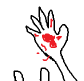

Vous expliquez qu'il ne faut pas qu'elle gaspille son mana pour des blessures superficielles.
De plus, ce ne sont pas des blessures mais des marques qui montrent votre progression.
Emilie vous regarde avec tristesse mais comprend.
Vous vous dites bonne nuit et vous vous endormez dos à dos.
Le lendemain matin, vous vous sentez toujours aussi fatigué, même pire qu'avant.
Emilie n'est plus là.
Au moment où vous vous levez, elle revient avec un sac de provisions.
"Bien le bonjour, je me suis permise d'acheter des provisions vu que tu dors encore, prêt à partir."
Vous la remerciez, récupérez vos affaires et repartez.
Quelques heures plus tard, vous retombez sur des loups.
Vous réussissez à les vaincre avec la même stratégie que la première fois, mais plus difficilement.
Vous vous sentez lourd et les soins d'Emilie n'arrangent pas votre état.
Emilie s'arrête et vous regarde avec inquiétude.
"Tu vas bien ?"
Vous hésitez un peu puis répondez "Oui, je vais bien."
Puis vous commencez à tousser...

Vous crachez du sang, comment c'est possible? Au moment où vous levez votre regard pour demander à Emilie si elle connaît un soin de poison.
Vous la voyez avec un grand sourire diabolique.
"Ah enfin!!! le sort du poison fait effet."
Vous dégainez votre épée mais vous êtes trop faible et vous vous mettez à genoux en vomissant votre sang.
"Merci de m'avoir sauvé des loups, ce n'était pas prévu mais ma bonne étoile t'a ramené. Mon boulot était plus simple grâce à ça"
Vous la regardez une dernière fois avec un regard de meurtrier avant de perdre connaissance et mourir à petit feu.
"Bon moi faut que je retourne voir le roi pour...." Vous n'avez pas le temps d'entendre la fin que vous êtes mort